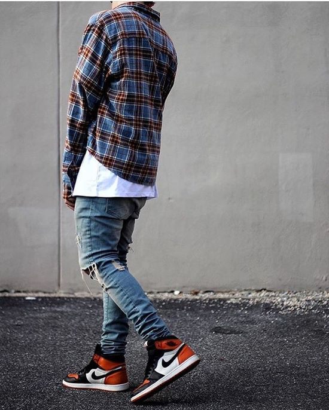

Sneakerhead el llamado “cabeza de tenis” traducido literalmente, significa: coleccionista de zapatillas, en general Sneakerheads se definen como individuos que coleccionan, comercializan y admiran zapatillas. Además, la mayoría conoce la historia de las zapatillas y les apasionan los factores nostálgicos que tienen las zapatillas. Una de las principales características de un sneaker head es empezar a vestir pensando en qué zapatillas te vas a poner. Las tres principales marcas que estas personas se enfocan son Nike, Adidas y Puma. Dentro de esta pagina web les vamos a brindar informacion sobre cual sneaker de estas dos primeras marcas, son las mas populares.